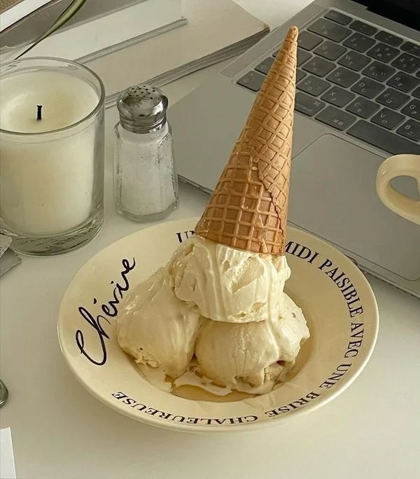

●
●
●
Home
Diary
Gallery
Profile
1:18
Saturday
July 6
‹
›
--°
Loading…
Wed
Mar
12

HOMEWORK
엔터로 줄 바꿈 하면
간단한 체크리스트가 생겨요
노션 연동으로 만드는
간편한 개인 홈페이지
기능 관련 문의 ▼
@dustduck_
Not Playing
0:00
-0:00
♥
테스트 가동한지
2026-11-03
D-0
불러오는 중…
불러오는 중…
불러오는 중…
불러오는 중…